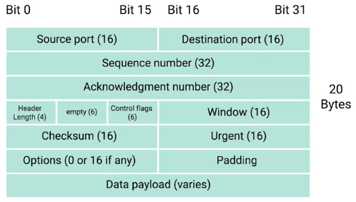

Las capas de transporte y aplicación
Introducción a las capas de transporte y aplicación
Las tres primeras capas de nuestro modelo de red nos han ayudado a describir cómo los nodos individuales en una red
se pueden comunicar con otros nodos en su propia red o en una red remota. Conectamos computadoras en red no solo para
que puedan enviarse datos entre ellas, sino porque queremos que los programas que se ejecutan en esas computadoras
puedan enviarse datos entre sí. En síntesis, la capa de transporte permite que el tráfico se dirija a aplicaciones de
red específicas. Y la capa de aplicación permite que estas aplicaciones se comuniquen de una forma que entiendan.
La capa de transporte
La capa de transporte es responsable de muchas de las funciones, importantes para la disponibilidad de una red de
computadoras. Estas incluyen multiplexing y demultiplexing, para manejar el tráfico, estableciendo conexiones de
larga duración y asegurando la integridad de los datos a través del chequeo de errores y la verificación de los
datos.
La capa de transporte tiene la capacidad de multiplex y demultiplex, lo cual ubica
a esta capa aparte de las demás. Multiplexing en la capa de transporte significa que los nodos en la red tienen la
habilidad de dirigir el trafico hacia muchos diferentes servicios. Demultiplexing es el mismo concepto, solo que en
el sentido opuesto, tomando todo el trafico que está siendo dirigido hacia el nodo y entregándolo al servicio
receptor apropiado.
La capa de transporte maneja el multiplexing y demultiplexing a través de puertos. Un puerto es un
numero de 16 bits que es usado para dirigir trafico hacia servicios específicos que están ejecutándose en una
computadora de la red. Diferentes servicios de la red se ejecutan mientras escuchan sobre puertos específicos for las
solicitudes entrantes.
Los puerto son normalmente denotado con los dos puntos después de la dirección IP. Así que la IP y puerto en este
escenario pudieran ser descritos como 10.1.1.100:80 Cuando son escritos en esta forma, es conocido como
dirección de socket o numero de socket.
Disección de un segmento TCP
Así como una trama de Ethernet encapsula un datagrama IP, un datagrama IP encapsula un segmento TCP. Un segmento TCP
se compone de un encabezado TCP y una sección de datos. Esta sección de datos, como puedes suponer, es solo otra área
de carga útil donde la capa de aplicación coloca sus datos.

• Primero, tenemos los campos del puerto de origen y el puerto de destino. El
puerto de destino es el puerto del servicio al que está destinado el tráfico. Un puerto de origen es un puerto con
numeración alta, seleccionado de una sección especial de puertos conocidos como "efímeros". ¿Recuerdas cómo un puerto
de destino, digamos el puerto 80, es necesario para garantizar que el tráfico llegue a un servidor web que se ejecuta
en una determinada IP?
• El siguiente es un campo conocido como número de secuencia. Es un número de 32 bits que se utiliza
para rastrear en qué lugar de una secuencia de segmentos TCP se espera encontrar un segmento en particular. Tal vez
recuerdes que más abajo en nuestra pila de protocolos, hay límites al tamaño total de lo que enviamos a través del
cable. En una trama de Ethernet, esto generalmente se limita a un tamaño de 1,518 bytes, pero nor
malmente necesitamos
enviar más datos que esos. En la capa de transporte, TCP divide todos estos datos en muchos segmentos. El número de
secuencia en un encabezado se utiliza para rastrear qué segmento de entre muchos otros podría ser este segmento en
particular.
• El siguiente campo, el número de acuse de recibo, es muy parecido al número de secuencia. El
número de acuse de recibo es el número del siguiente segmento esperado.
• A continuación viene el campo de longitud del encabezado. Este campo es un número de cuatro bits
que comunica la longitud del encabezado TCP para este segmento. Esto es para que el dispositivo receptor de red
comprenda dónde comienza la carga útil real de datos.
• Luego, tenemos seis bits que están reservados para los seis indicadores de control de TCP.
• El siguiente campo es un número de 16 bits conocido como ventana TCP. Una ventana TCP especifica
el rango de números de secuencia que pueden enviarse antes de que se requiera un acuse de recibo.
• El siguiente campo es una suma de verificación de 16 bits. Funciona igual que los campos de suma
de comprobación a nivel de IP y Ethernet.
• El campo del puntero urgente se usa junto con uno de los indicadores de control TCP para señalar
segmentos particulares que podrían ser más importantes que otros. Esta es una función de TCP que nunca se ha adoptado
y que probablemente nunca encuentres en redes modernas.
• A continuación, tenemos el campo de opciones.
• Por último, tenemos un relleno que es solo una secuencia de ceros para asegurarnos de que la
sección de carga útil de datos comience en la ubicación esperada.
Banderas de control TCP y el apretón de manos de tres vías
La forma en que TCP establece una conexión, es a través del uso de diferentes campos de control TCP.
• El primer campo se conoce como la señal URG, iniciales para Urgente. Un valor de
uno aquí indica que el segmento es considerado urgente y que el apuntador urgente tiene mas datos.
• El segundo campo es la señal ACK, iniciales de acknowledge o reconocido. Un valor
uno en este campo significa que el numero de reconocimiento debe ser examinado.
• El tercer campo es la señal PSH, iniciales de Push o empujar. Esto significa, que
el dispositivo transmisor quiere que el dispositivo receptor empuje datos ya en buffer hacia la aplicación en el
receptor tan pronto como sea posible. Un buffer es una técnica de computación, donde una cierta cantidad de datos es
guardada en alguna parte, antes de ser enviada a otra. En términos de TCP, se usa para enviar grandes porciones de
datos de forma mas eficiente. Manteniendo alguna cantidad de datos en un buffer, TCP puede entregar mas
significativas porciones de datos al programa que los espera. Pero, en algunos casos, usted podría enviar una muy
pequeña cantidad de información, que necesita para que el programa que escucha responda inmediatamente.
• El cuarto campo es la señal RST, iniciales de Resetear, Significa que una de las
partes en una conexión TCP no ha sido capas de recuperar apropiadamente una serie de segmentos perdidos o mal
formados.
• El quinto campo es la señal SYN, iniciales de Synchronize o Sincronizar. Es usada
para establecer primero una conexión TCP y asegurarse que el extremo receptor sepa examinar el campo numero de
secuencia.
• Y finalmente, nuestro campo seis es la señal FIN, iniciales de Fin. Cuando este campo es puesto en
uno, significa que el computador transmisor no tiene mas datos que enviar y la conexión puede ser cerrada.
Un buen ejemplo de como campos d
e control TCP son usados, lo tenemos en como una conexión TCP se establece.
El computador A sera nuestro computador transmisor y el computador B sera nuestro computador receptor. Para empezar
el proceso, el computador A, envía un segmento TCP al computador B con el campo en la señal SYN. Esta es una forma
para computador A decir, "Establezcamos una conexión y revisa mi numero de secuencia, asi sabremos donde esta
conversación inicia." El computador B luego responde con el segmento TCP, donde las señales SYN y ACK estan listas.
Esta es una forma para el computador B decir, "seguro establezcamos una conexión y yo reconozco su numero de
secuencia." Luego el computador A responde de nuevo con la señal ACK, lo cual quiere decir, "Reconozco su
reconocimiento. empecemos enviar datos."
Este intercambio de segmentos que tienen señales SYN, SYN/ACK y ACK, ocurre cada vez que una conexión TCP es
establecida en alguna parte. Y es tan popular que lleva un apodo. El choque de manos tripe (The
three way handshake). Una vez que el choque de manos triple se completa, la conexión TCP es establecida. Una conexión
TCP en este estado esta operando en full duplex.
Una vez que uno de los dispositivos dentro de la conexión TCP esta listo para cerrar la conexión, ocurre algo
conocido como un choque de manos cuádruple. El computador listo para cerrar la conexión, envía una
señal FIN. lo cual el otro computador reconoce con la señal ACK. Luego, si el otro computador esta listo también para
cerrar la conexión, lo cual sera el caso casi siempre. Enviara una señal FIN. Esto es de nuevo contestado con una
señal ACK.
Hipotéticamente, una conexión TCP puede mantenerse abierta en modo simplex con solamente una parte cerrando la
conexión. pero esto no es algo que usted vera frecuentemente.
Estados de socket TCP
Un socket es la creación de instancias de un terminal en una conexión TCP potencial. Una
creación de instancias es la implementación real de algo definido en otro lugar. Los sockets TCP
requieren programas reales para poder crear sus instancias. Puedes enviar tráfico al puerto que quieras, pero solo
obtendrás una respuesta si un programa abrió un socket en ese puerto.
LISTEN significa que un socket TCP está disponible y escuchando las conexiones entrantes. Veras esto
solo del lado del servidor.
SYN_SENT significa que se ha enviado una solicitud de sincronización, pero la conexión no se
estableció todavía. Veras esto solo del lado del cliente.
SYN_RECEIVED significa que un socket, previamente en estado LISTEN, recibió una solicitud de
sincronización y devolvió un SYN_ACK. Pero todavía no recibió el ACK final del cliente. Veras esto solo del lado del
servidor.
ESTABLISHED. Esto significa que la conexión TCP está en funcionamiento y que ambos lados son libres
de enviarse datos. Verías este estado tanto del lado cliente como del lado servidor de la conexión.
FIN_WAIT. Esto significa que se envió un FIN, pero que el ACK correspondiente del otro lado todavía
no se recibió.
CLOSE_WAIT. Esto significa que la conexión se cerró en la capa TCP, pero que la aplicación que abrió
el socket no lo liberó aún.
CLOSED. Esto significa que la conexión finalizó por completo y que no es posible más
comunicación.
Hay otros estados de socket TCP. Además, los estados de socket y sus nombres pueden variar de un sistema operativo a
otro. Eso es porque existen fuera del alcance de la definición misma de TCP. TCP, como protocolo, es universal en su
modo de uso, ya que todos los dispositivos que se comunican en el protocolo TCP tiene que hacerlo exactamente de la
misma manera para que las comunicaciones sean exitosas.
Protocolos orientados
a la conexión y sin conexión
Un protocolo orientado a la conexión es uno que establece una conexión y se asegura de que todos los
datos se hayan transmitido correctamente. Una conexión en la capa de transporte implica el reconocimiento de cada
segmento de datos enviado. Así, ambos extremos de la conexión siempre saben qué bits de datos se entregaron sin duda
alguna al otro lado, y qué bits no.
Los protocolos orientados a la conexión, como TCP, nos protegen de errores formando conexiones y mediante el flujo
constante de acuses de recibo. Nuestros protocolos en los niveles más bajos de nuestro modelo de red, como IP y
Ethernet, usan sumas de verificación para asegurarse de que todos los datos recibidos sean correctos.
A nivel de IP o Ethernet, si una suma de verificación no concuerda, todos esos datos simplemente se descartan.
Depende de TCP determinar cuándo reenviar estos datos, ya que como TCP espera un ACK por cada bit de datos que envía,
está en la mejor posición para saber qué datos se entregaron con éxito y puede tomar la decisión de reenviar un
segmento si es necesario. Esta es otra razón por la cual los números de secuencia son tan importantes.
Mientras que, por lo general, TCP enviará todos los segmentos en orden secuencial, no siempre pueden llegar en ese
orden. Si algunos de los segmentos debieron reenviarse debido a errores en las capas inferiores, no importa si llegan
algo desordenados. Esto se debe a que los números de secuencia permiten que todos los datos vuelvan a unirse en el
orden correcto.
Los protocolos sin conexión. El más común de estos se conoce como UDP, o Protocolo de datagramas de
usuario. A diferencia de TCP, UDP no confía en las conexiones y ni siquiera admite el concepto de acuse de recibo.
Con UDP, apenas estableces un puerto de destino y envías el paquete. Esto es útil para mensajes que no son
importantísimos. Esto se debe a que ahorrarás más ancho de banda disponible para transferir datos reales en lugar de
la sobrecarga que resulta de establecer conexiones y reconocer segmentos de datos entregados.
Sistema de puertos contra puertos efímeros
Los protocolos de la capa de transporte utilizan un concepto de puertos y multiplexación / demultiplexación para
entregar datos a servicios individuales que escuchan en nodos de red. Estos puertos están representados por un solo
número de 16 bits, lo que significa que pueden representar los números 0-65535.
Este rango ha sido dividido por la IANA en secciones independientes:
• El puerto 0 no se usa para el tráfico de red, pero a veces se usa en las comunicaciones que tienen lugar entre
diferentes programas en la misma computadora.
• Los puertos 1-1023 se conocen como puertos del sistema o, en ocasiones, como "puertos
conocidos". Estos puertos representan los puertos oficiales de los servicios de red más conocidos. En un
video anterior, hablamos sobre cómo HTTP normalmente se comunica a través del puerto 80, mientras que FTP
generalmente se comunica a través del puerto 21. En la mayoría de los sistemas operativos, se necesita acceso a nivel
de administrador para iniciar un programa que escucha en un puerto del sistema.
• Los puertos 1024-49151 se conocen como puertos registrados. Estos puertos se usan para muchos
otros servicios de red que pueden no ser tan comunes como los que están en los puertos del sistema. Un buen ejemplo
de un puerto registrado es 3306, que es el puerto que muchas bases de datos escuchan. Los puertos registrados a veces
están registrados y reconocidos oficialmente por la IANA, pero no siempre. En la mayoría de los sistemas operativos,
cualquier usuario de cualquier nivel de acceso puede iniciar un programa escuchando en un puerto registrado.
• Finalmente, tenemos los puertos 49152-65535. Estos son conocidos como pue
rtos privados o efímeros.
Los puertos efímeros no se pueden registrar con la IANA y generalmente se utilizan para establecer conexiones
salientes. Debe recordar que todo el tráfico TCP utiliza un puerto de destino y un puerto de origen. Cuando un
cliente desea comunicarse con un servidor, se le asignará un puerto efímero para que se use solo para esa conexión,
mientras el servidor escucha en un sistema estático o un puerto registrado.
No todos los sistemas operativos siguen las recomendaciones de puertos efímeros de la IANA. En esta lección,
continuaremos suponiendo que los puertos efímeros utilizados para las conexiones salientes consisten en los puertos
49152 a 65535. Pero es importante saber que este rango exacto puede variar según la plataforma en la que estés
trabajando. A veces, se utilizan partes del rango de puertos registrados, pero ningún sistema operativo moderno
utilizará un puerto del sistema para la comunicación de salida. https://es.wikipedia.org/wiki/Anexo:N%C3%BAmeros_de_puertos_de_red
Cortafuegos
Un firewall es un dispositivo que bloquea el tráfico que cumple ciertos criterios. Los firewalls pueden funcionar en
muchas capas diferentes de la red. Hay firewalls que pueden inspeccionar el tráfico de la capa de aplicación, y
firewalls cuya tarea principal es bloquear rangos de direcciones IP. La razón por la que veremos los firewalls aquí
es que se los usa comúnmente en la capa de transporte.
Los firewalls que trabajan en la capa de transporte tendrán, por lo general, una configuración que les permite
bloquear el tráfico dirigido a ciertos puertos, a la vez que permite el tráfico a otros puertos.
Los firewalls, a veces, son dispositivos de red independientes, pero es mejor pensar en ellos como un programa que
puede ejecutarse en cualquier lugar. Bloquear o permitir el tráfico a diversos puertos y, por lo tanto, a servicios
específicos también puede hacerse a nivel del host.
 Índice
Índice